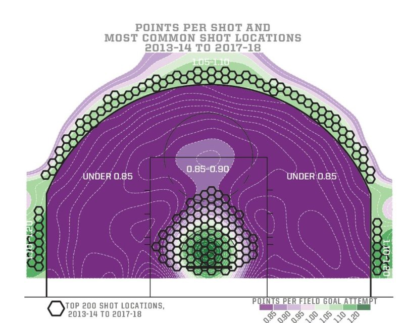

My Basketball Philosphy
Here's how I think about basketball:
Basketball is like jazz.
My basic philosophy is that basketball is like jazz. There are five teammates on the court, each specializes in something different, they take turns taking center stage based on their specialty, and meanwhile, the other four players must provide background support.
Just like in jazz, there is a flow, rhythm, and tempo to basketball, and just like in jazz, there is lots of improvisation. Just like in jazz, it doesn’t matter if you play the wrong note, it just matters how you resolve it.
The coach sets the playing strategy and teaches the tactics of that strategy.
Strategy
Just like a jazz band, the coach needs to decide “how [we’re] going to play”; that is, the coach needs to set the team’s playing strategy.
For a jazz band, the strategy might be to play loose and improvisational. For a basketball team, the strategy might be to play with pace and space. Whatever the strategy, it’s the coach’s job to set it.
A jazz band with no cohesive playing strategy isn't fun to listen to. A basketball team with no cohesive playing strategy isn't fun to watch.
Tactics
Just like jazz band members, basketball players need to know how to do what and when; that is, they need to be able to execute playing tactics.
For a jazz band member, it may be playing legato, staccato, or tenuto. For a basketball player, it may be executing a hedge, jam, or drop.
Whatever the tactics are, it’s the coach’s job to teach them. That way players will improve within the strategy (or within the "system", as it's typically called) over time.
“Strategy without tactics is the slowest route to victory. Tactics without strategy is the noise before defeat.” –Sun Tzu, The Art of War
A coach is like a chef.
Now you might be wondering: what basketball strategy would I employ? What tactics would I prioritize teaching?
My answer is simple: it depends.
I think a basketball coach is like a chef. A great chef wouldn't decide what dish to make before they know what ingredients they have; similarly, a great coach wouldn't decide what strategy to employ before knowing what kind of talent they have.
Basketball talent is about as diverse as food ingredients are. Some players play with size and strength; others play with speed and agility. Some are great shooters; others are great passers. Some can be selfish; some can be selfless. Whatever your talent pool is, you're going to want to assess it before you make any strategic decisions.
Some coaches decide to recruit the specific type of talent they need for their system. Other coaches adapt their system for the type of talent they're able to recruit. While I fall more into the latter category than the former, I recognize the merits of both.
A great chef would be able to make a great dish as long as the ingredients are good; similarly, a great coach would be able to develop a great strategy as long as the talent is good.
There are many great playing styles, just like there are many great food dishes. Over my career, my plan is to recruit and attract lots of great ingredients so that together we can create lots of yummy basketball dishes together.
A coach is like a farmer.
Unlike chefs, coaches help grow their own ingredients - sort of like a farmer.
Each player will arrive with a certain skill and ability level. The coach must take responsibility for setting the conditions for that skill and ability level to improve over time. Otherwise players will not improve as fast as they need to.
Just like a farmer, if the coach creates a "fertile" learning environment, the skills and abilities of their players will blossom. And that will make all the difference when the eventual dish is served. So getting the team culture right is key.
Basketball is one of the world's simplest math problems.
There are five players on each team, and there is one ball. If two defenders are covering the ball, then one offensive player is left uncovered. If the defense cannot cover the ball one-on-one, then two defenders will be needed to cover the ball. Ergo, if the defense cannot cover the ball one-on-one, then one offensive player will have to be left uncovered (I'm simplifying, but this is the by-and-large picture).
The same is true in reverse: If one defender can cover two offensive players (typically off the ball), then one defensive player is freed-up to help (typically on the ball). If each defender can shutdown their player one-on-one, then no help is needed and it will be nearly impossible for the offense to create an advantage (again, I'm simplifying, but this is the by-and-large picture).
Therefore: on offense, the goal is to "put two on the ball"; on defense, the goal is to "cover two with one". That is the yin and yang of basketball - over and over again, every possession, every play.
The court is flat but the terrain is variable.
Obviously a basketball court is flat. But it's critical to understand the variable "terrain" of the court.
Three's are worth more the two's. Shots near the rim are easier than shots further away from it. The combination of these two create the "terrain" of the court, i.e. the different expected shot values of each shot location.
This point has been best illustrated by Kirk Goldsberry in his book Sprawlball:
The above picture depicts different expected shot values for each shot location on the court. Looks a bit like a topographic map, right? That's what I mean by the "terrain" of the court.
If you understand this terrain, you can create a strategy that takes advantage of it. If you ignore this terrain, you put your team at a disadvantage.
The most important skill in basketball is shooting.
It's called "basketball" for a reason: you have to put the ball in the basket. The ability to be able to do this, i.e. the ability to shoot, especially behind the 3pt line, is the most valuable skill in basketball.
By-and-large, if you can both shoot and defend, you're going to play, no matter what team you're on. That's because shooting allows your team to take advantage of the "terrain" created by the 3pt line.
Obviously not all players need to be great shooters, particularly if that player has size and strength. There are a lots of different basketball skills and abilities, each with varying degrees of importance.
But if you don't have shooters on your team, things are going to be a lot more difficult. I can promise you that.
Shooters rule the basketball world. – Doc Scheppler
The game honors toughness.
Basketball isn't played on a spreadsheet any more than jazz is played in a textbook.
Whether it's rebounding, loose-balls, drawing fouls, or running the floor, basketball is a game that rewards doing the little things right. All winning teams know this; all tough teams know this.
When the game is on, only one thing is guaranteed: players are going to make mistakes. But no matter what happens, a tough player knows there's only one play that matters: the next one!!
Further reading:
The above text summarizes the basic framework within which I think about basketball. Obviously this is just the tip of the iceberg when it comes to my basketball knowledge, but I hope it gives you some idea of how I think, basketball-wise.
I do maintain a more comprehensive document of my basketball knowledge, which I add to and adjust over time. If you're curious and you'd like to read that document, it's available here. I hope you like it, and please don't hesitate to reach out if you have any feedback!